什么是屏幕空间反射
在前面的文章的一些配图中，其实已经揭露了之前在KongEngine 中实现的一个不小的功能点，就是屏幕空间反射（screen space reflection） 。加入了屏幕空间反射能力之后，在一些光滑和带有反射材质的表面上，能够实现不错的反射效果。
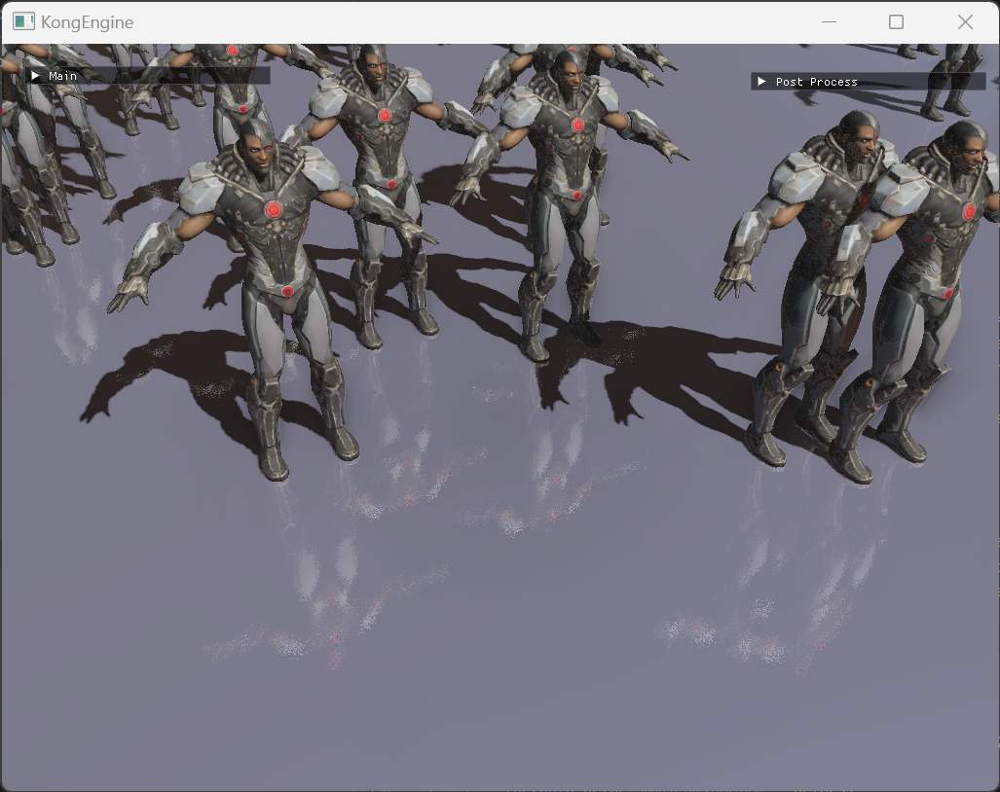
屏幕空间反射（后简称SSR ）是一种在实时渲染中用于模拟物体表面反射的成熟技术。SSR 的核心原理是在屏幕空间 中进行光线追踪，以此计算反射效果，而无需像传统方法那样在世界空间或物体空间中进行复杂的光线与场景求交计算。它主要利用屏幕上已有的深度图 和法线图 等信息，通过对这些信息的分析和处理，确定反射光线的方向和位置，进而得到反射颜色。
因为SSR不错的效果表现和相对来说比较低的性能开销，使其被广泛的应用在各个实时渲染领域，包括游戏、虚拟现实、建筑可视化等等。当然SSR的效果其实还不够完美，有很多无法解决的问题，这个在后面也会提到。但是在大多数情况下它的效果都是足够的，属于一个很高性价比 的方法。
如何实现屏幕空间反射
屏幕空间反射的实现方法
简单概括一下SSR的实现方法：
对于屏幕上的每个像素，先获取其深度值 和法线向量 。
结合相机参数和屏幕坐标计算出观察向量 ，进而得到反射向量 。
沿着反射向量在屏幕空间进行光线追踪，查找反射光线与场景中其他物体的相交点，以获取反射光线的颜色，最终将反射颜色与场景的原始颜色进行合成，得到带有反射效果的最终渲染结果。
我们对于上面1、2两步应该已经不陌生了，毕竟我们在前面的文章就介绍了KongEngine接入延迟渲染 的能力，在G-Buffer中我们已经存储了屏幕空间的各种相关数据，包括深度值和法线向量。有了这些数据，按照第2点计算反射向量也是很顺理成章的事情。
对应的代码如下：
1 2 3 4 5 6 7 8 9 10 11 12 13 14 15 16 17 18 19 20 void CRender::SSReflectionRender () const ssreflection_shader->Use (); glActiveTexture (GL_TEXTURE0); glBindTexture (GL_TEXTURE_2D, defer_buffer_.g_position_); glActiveTexture (GL_TEXTURE0 + 1 ); glBindTexture (GL_TEXTURE_2D, defer_buffer_.g_normal_); glActiveTexture (GL_TEXTURE0 + 2 ); glBindTexture (GL_TEXTURE_2D, post_process.screen_quad_texture[0 ]); glActiveTexture (GL_TEXTURE0 + 3 ); glBindTexture (GL_TEXTURE_2D, defer_buffer_.g_orm_); quad_shape->Draw (); }
那么SSR的关键步骤，其实就在第三步，也是需要理解的重点部分。
获得反射的颜色
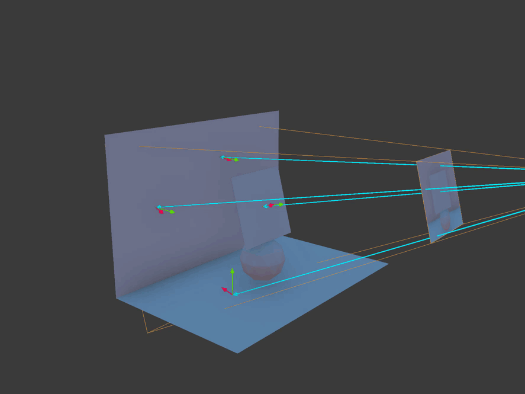
上面这张图大致描述了第3步的状态。图片中蓝色 的向量代表了从相机向场景中的每个像素发射的观察向量，绿色 的向量代表了场景中的法线向量，根据观察向量和法线向量，我们能够计算出反射向量，也就是图片中的红色 向量。
我们需要得到的反射结果的颜色，基于反射向量和渲染场景中的其他物体的相交结果，这个是通过在屏幕空间进行步近，判断步近后的坐标深度和深度缓存中存储的物体深度是否相交 来得到的。如果有相交结果，则该像素的反射颜色就是相交处的场景颜色，若超出步近范围（会预先设置一个步近长度或者步数的范围），则改点没有反射需要处理。
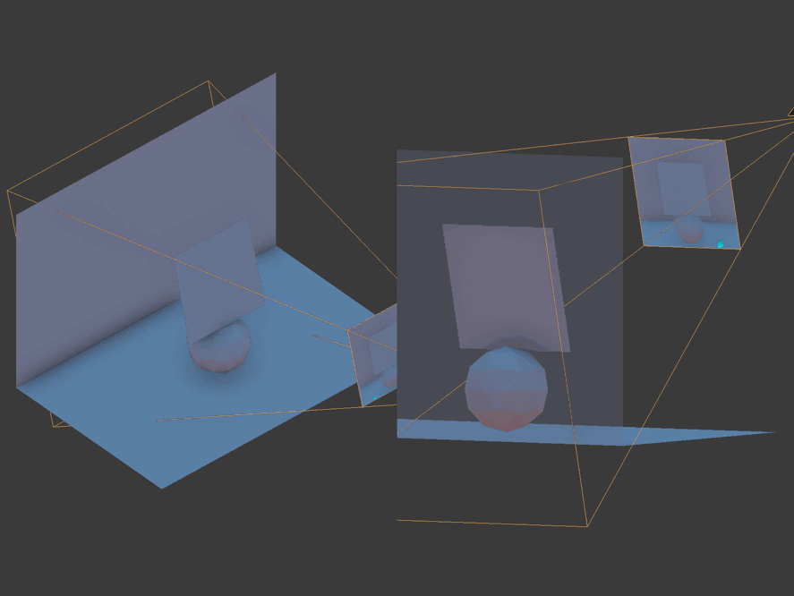
这个原理是非常简单易懂的，下面是这段逻辑的大致代码：
1 2 3 4 5 6 7 8 9 10 11 12 13 14 15 16 17 18 19 20 void main(){ vec2 tex_size = textureSize (scene_position, 0 ).xy; vec2 tex_uv = gl_FragCoord .xy / tex_size; vec4 orm = texture (orm_texture, TexCoords); float roughness = orm.y; float metallic = orm.z; vec4 s_color = texture (scene_color, TexCoords); FragColor = s_color; vec4 normal_depth = texture (scene_normal, TexCoords); vec3 world_normal = normalize (normal_depth.xyz + randVec3(fract (TexCoords.x*12.345 )*sin (TexCoords.y)*9876.31 )*0.2 *roughness); ... }
上面这段代码是将gbuffer中的信息读出来，包括前面讲到的几个部分。其中法线信息world_normal和材质的粗糙度做了一个随机方向的叠加，可以稍微增加反射效果的粗糙感。
1 2 3 4 5 6 7 8 9 10 11 12 13 14 15 16 17 18 19 20 21 22 23 24 25 26 27 28 { ... vec2 near_far = matrix_ubo.near_far.xy; vec3 world_pos = texture (scene_position, TexCoords).xyz; vec3 cam_pos = matrix_ubo.cam_pos.xyz; mat4 projection = matrix_ubo.projection; mat4 view = matrix_ubo.view; mat4 vp = projection * view; vec3 view_dir = normalize (world_pos-cam_pos); vec3 rd = normalize (reflect (view_dir, world_normal)); float resolution = 0.5 ; float max_step_dist = 5.0 ; vec3 start_pos_world = world_pos + rd*0.1 ; vec3 end_pos_world = world_pos + max_step_dist*rd; vec4 start_clip = vp * vec4 (start_pos_world, 1.0 ); vec4 end_clip = vp * vec4 (end_pos_world, 1.0 ); ... }
在上面的代码，我们计算出了反射向量rd，同时也为步进设定了一个范围max_step_dist，得到了反射的步进区间，接下来就是进行步进的操作了。
1 2 3 4 5 6 7 8 9 10 11 12 13 14 15 16 17 18 19 20 21 22 23 24 25 26 27 { ... int step_count = 32 ; int sample_count = step_count; float delta = 1.0 / sample_count; vec4 reflect_color = vec4 (0.0 ); vec3 cam_pos = matrix_ubo.cam_pos.xyz; for (int i = 0 ; i < sample_count; i++) { float sample_t = i*delta; vec2 uv = vec2 (0 ); if (campareDepth(start_clip, end_clip, start_pos_world, end_pos_world, sample_t, uv)) { reflect_color = texture (scene_color, uv); break ; } } FragColor = reflect_color*metallic; }
上面的步进代码中，根据设定好的步进步数迭代，campareDepth函数中将当前位置的深度和深度缓存中的数据作对比，若当前深度大于缓存中的值，则代表击中并返回对应的屏幕空间贴图对应的uv值。
最后反射的颜色和金属度相乘，金属度越高的材质反射也是越高的。在场景渲染的最后，将反射颜色和场景实际的颜色结合，就得到了基本的反射效果了。
1 2 3 4 FragColor = texture (scene_texture, TexCoords); vec4 reflection_color = texture (reflection_texture, TexCoords);FragColor.rgb += reflection_color.rgb * reflection_color.a;
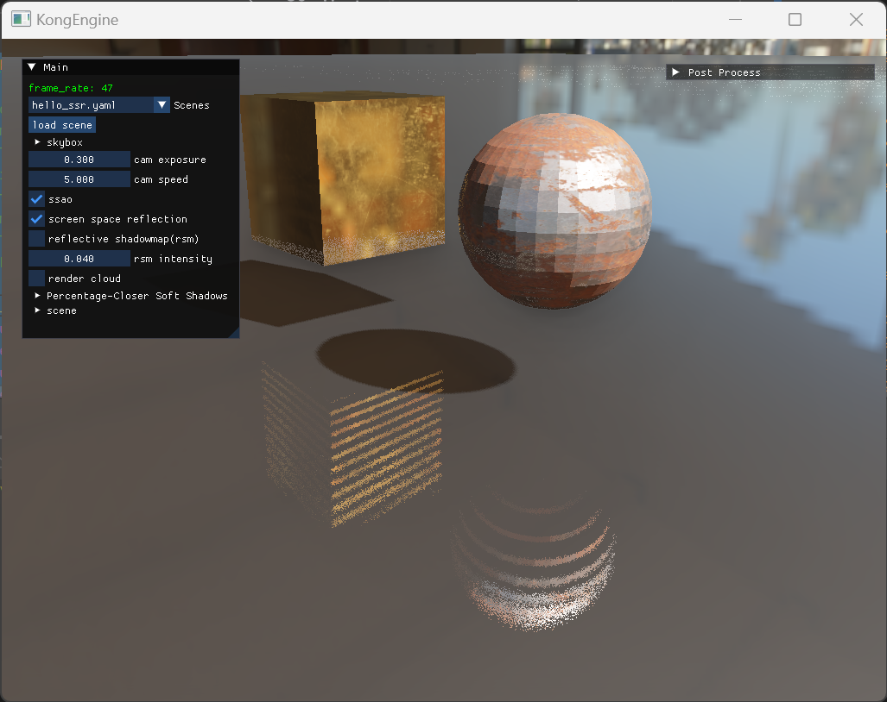
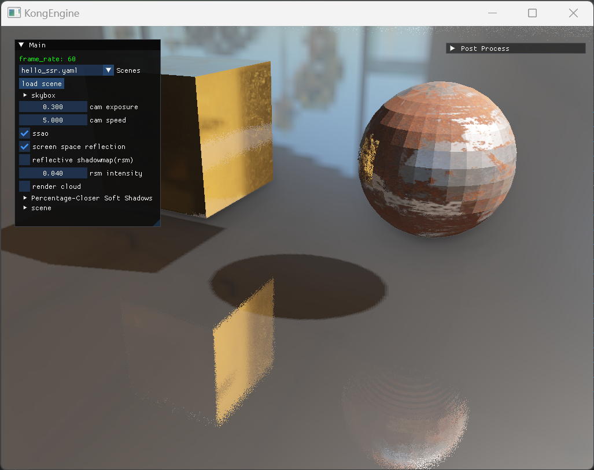
屏幕空间反射的优化
现在我们已经有了基础的反射效果了，但是我们还是不满足不是吗。单纯提升采样精度确实能得到不错的效果，但是始终还是要考虑实际的性能的。那么有什么方法可以优化SSR的表现呢，下面会做一部分简单的介绍。
粗晒和精筛
在上面的采样处理中，我们通过步进迭代获取到了深度超过gbuffer中的深度的位置。为了弥补采样步数不足，我们可以将采样过程分为两部分：首先是粗筛，用较低的采样精度获取到大致的区间；然后再利用二分法或者其他方法在大致区间内进行二次筛选。
1 2 3 4 5 6 7 8 9 10 11 12 13 14 15 16 17 18 19 20 21 22 23 24 25 26 27 28 29 30 31 { ... float sample_t = i*delta; vec2 uv = vec2 (0 ); if (campareDepth(start_clip, end_clip, start_pos_world, end_pos_world, sample_t, uv)) { reflect_color = texture (scene_color, uv); int split_count = 10 ; float i_divide_pos = 0.5 ; while (split_count > 0 ) { if (campareDepth(start_clip, end_clip, start_pos_world, end_pos_world, (float (i)-i_divide_pos)*delta, uv)) { i_divide_pos += i_divide_pos*0.5 ; } else { i_divide_pos -= i_divide_pos*0.5 ; } split_count--; } reflect_color = texture (scene_color, uv); break ; } ... }
下面是这种方法的结果，可以看到效果是稍微好了些，不过如果需要再进一步的话，还是避免不了要提升采样精度。
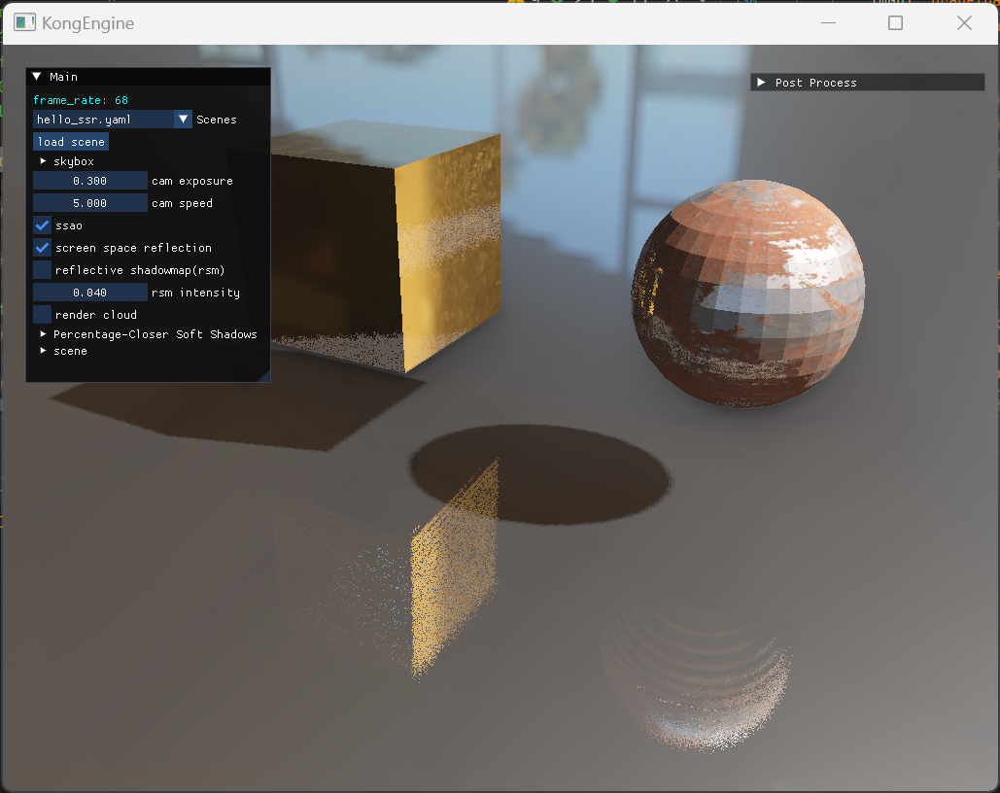
屏幕空间步进
目前比较常用的优化方法，是把三维空间做光线步近替换为在屏幕空间做光线步近。
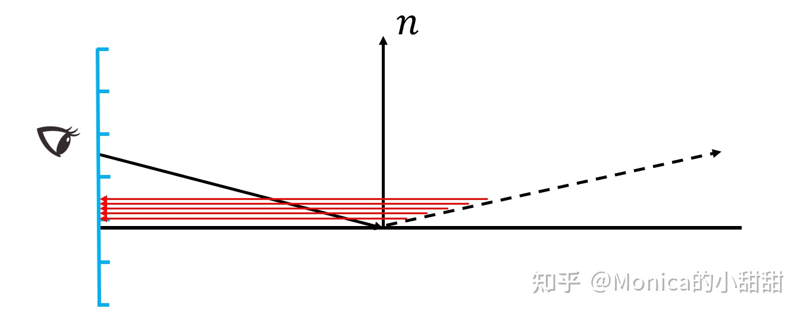
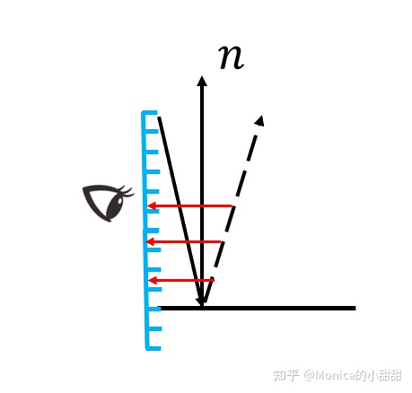
反射角度过小的时候，有很容易出现跳过中间某些像素的情况，出现了欠采样的情况。这也是我们上面的反射效果出现了带状的原因。
在Efficient GPU Screen-Space Ray Tracing 这篇文章提出了在屏幕空间采样的观点。通过将采样点的选择放在屏幕空间，实现采样点连续且分布均匀的效果。每个采样点不会进行重复计算，也保证了性能的最优。
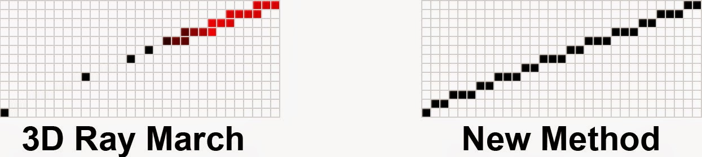
为了实现屏幕看见步近，代码需要做一些修改：
1 2 3 4 5 6 7 8 9 10 11 12 13 14 15 16 17 18 19 20 21 22 23 24 25 26 27 28 29 30 31 32 33 34 35 36 37 38 39 40 { ... vec3 start_pos_world = world_pos + rd*0.1 ; vec3 end_pos_world = world_pos + max_step_dist*rd; vec4 start_clip = vp * vec4 (start_pos_world, 1.0 ); vec4 end_clip = vp * vec4 (end_pos_world, 1.0 ); vec3 start_ndc = start_clip.xyz / start_clip.w; vec3 end_ndc = end_clip.xyz / end_clip.w; vec3 ndc_diff = end_ndc - start_ndc; vec3 start_screen = vec3 (0 ); start_screen.xy = (start_ndc.xy + 1 ) / 2 * tex_size; start_screen.z = (near_far.y - near_far.x) * 0.5 * start_ndc.z + (near_far.x + near_far.y) * 0.5 ; vec3 end_screen = vec3 (0 ); end_screen.xy = (end_ndc.xy + 1 ) / 2 * tex_size; end_screen.z = (near_far.y - near_far.x) * 0.5 * end_ndc.z + (near_far.x + near_far.y) * 0.5 ; int step_count = 32 ; vec3 screen_diff = end_screen - start_screen; int sample_count = int (max (abs (screen_diff.x), abs (screen_diff.y)) * resolution) ; sample_count = min (sample_count, 64 ); vec3 delta_screen = screen_diff / float (sample_count); float percentage_delta = 1.0 / float (sample_count); vec3 current_screen = start_screen; vec3 last_screen = current_screen; float current_percentage = 0.0 ; float last_percentage = 0.0 ; ...
使用屏幕空间步近，前面和原来的差不多，在获取步近的起始点和结束点的时候，需要将坐标转换为屏幕空间的坐标，也就是其中的current_screen和last_screen。
屏幕空间采样点数和采样的起始和结束位置的像素差值 有关，所以和渲染输出的分辨率也是相关的。如果渲染分辨率越高，其对应所需要的采样点数可能也会增加，这里我们控制在64以内。当然如果起始点和结束点的像素差值较小，对应的采样点数也会变小，也就是对于距离相机很远的位置的采样会减少，在怎么不影响效果的情况下提升性能表现。
1 2 3 4 5 6 7 8 9 10 11 12 13 14 15 16 17 18 19 20 21 22 23 24 25 26 27 28 29 30 31 32 33 34 35 36 37 38 39 40 41 42 43 44 45 46 47 48 49 50 51 52 53 54 55 56 ... vec4 reflect_color = vec4 (0.0 ); vec3 cam_pos = matrix_ubo.cam_pos.xyz; for (int i = 0 ; i < sample_count; i++) { vec2 uv = current_screen.xy / tex_size; if (uv.x < 0.0 || uv.y < 0.0 || uv.x > 1.0 || uv.y > 1.0 ) { continue ; } else { vec3 sample_world = texture (scene_position, uv).xyz; vec4 sample_ndc = vec4 (mix (start_ndc, end_ndc, current_percentage), 1.0 ); if (compareDepth(sample_ndc, uv)) { int split_count = 5 ; while (split_count > 0 ) { vec3 mid_screen = (last_screen + current_screen) * 0.5 ; float mid_percentage = (last_percentage + current_percentage) * 0.5 ; vec4 mid_ndc = vec4 (mix (start_ndc, end_ndc, mid_percentage), 1.0 ); uv = mid_screen.xy / tex_size; if (compareDepth(mid_ndc, uv)) { current_screen = mid_screen; } else { last_screen = mid_screen; } split_count--; } reflect_color = texture (scene_color, uv); break ; } last_screen = current_screen; last_percentage = current_percentage; current_screen += delta_screen; current_percentage += percentage_delta; } } FragColor = reflect_color*metallic; }
这里在屏幕空间采样还配合了之前的粗筛和精筛的方法，下面是使用屏幕空间采样的表现。可以看到条纹的状况被极大的缓解了。
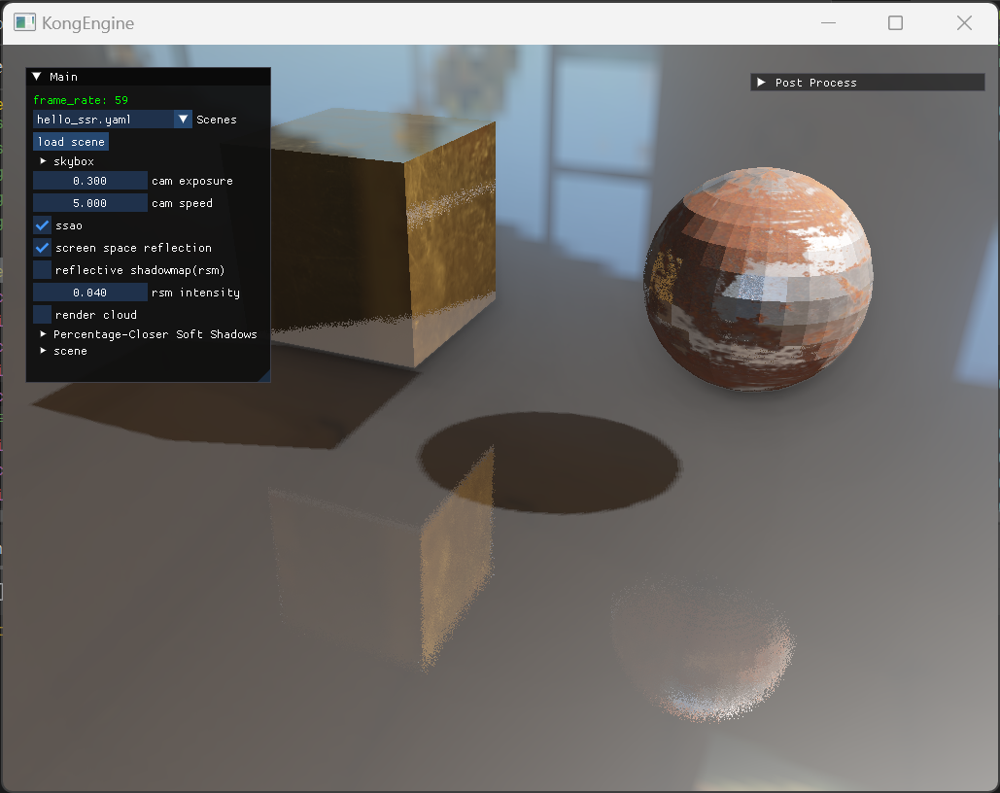
应用在实际场景中，SSR的效果能比较明显的提升渲染质感。
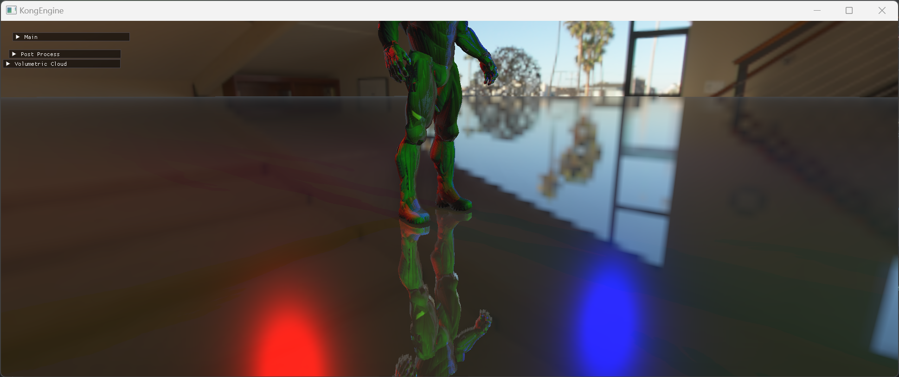
总结
SSR是一种计算场景的反射效果的算法，它基于屏幕空间已有的深度图和法线图等信息，通过计算反射向量，在屏幕空间中进行光线追踪，查找反射光线与场景中其他物体的相交点，获取相交点的颜色作为反射颜色，并与原始颜色合成得到最终渲染结果。
SSR的优点是计算效率相对较高，能实时反映场景中物体的变化，适用于复杂几何形状和不规则表面，适合大规模的动态场景，无需额外的镜头或几何体。
当然，SSR也有局限性，它只能反射屏幕上可见的物体，超出屏幕边界的内容无法被反射；反射的物体可能存在失真或错误，尤其是边缘区域；依赖屏幕分辨率，高分辨率下可能对性能有较大影响
SSR的优化改进算法：
SSSR（Spatially Separated Screen Space Reflection）
原理：SSSR 是对传统 SSR 技术的一种改进。它主要是基于空间分离的思想来处理屏幕空间反射。传统 SSR 在处理反射时可能会受到屏幕空间限制和采样不足等问题的影响。SSSR 通过将屏幕空间划分为不同的区域，在这些区域内分别进行更精细的反射处理。
例如，它可以根据场景中物体的距离、重要性或者反射特性等因素，对空间进行划分。对于反射效果比较复杂或者重要的区域，分配更多的资源进行反射计算，而对于相对简单或者不重要的区域，则采用较为简略的计算方式。
优点：
提高反射精度：通过对特定区域的精细处理，能够有效提高反射的精度。比如在处理具有高反射率的物体表面或者复杂的光照反射场景时，可以得到更真实、细腻的反射效果。
优化性能：与传统 SSR 相比，SSSR 能够更合理地分配计算资源。它避免了在整个屏幕空间进行统一标准的反射计算，从而在一定程度上减轻了计算负担，特别是在大规模复杂场景中，可以更好地平衡反射效果和性能。
局限性：
空间划分的复杂性：如何合理地划分空间是一个具有挑战性的问题。如果空间划分不合理，可能会导致反射效果出现不自然的边界或者遗漏重要的反射区域。
增加算法复杂度：空间划分和不同区域的分别处理增加了算法的复杂度。这可能会导致开发和调试的难度增加，并且在某些情况下，可能会引入新的错误或者视觉瑕疵。
Hi-z SSR（Hierarchical - z Screen Space Reflection）
原理：Hi - z SSR 是利用层次化的深度信息（Hierarchical-z）来改进 SSR。它构建了一个层次化的深度缓冲区，这个缓冲区可以更有效地存储和检索深度信息。在计算反射时，通过这个层次化的结构，可以快速地在不同层次的深度信息中进行搜索和采样。
优点：
高效的深度搜索：层次化的深度搜索大大提高了反射光线与场景相交点的查找效率。尤其是在处理具有深度层次丰富的复杂场景时，能够快速定位反射位置，减少计算时间。
增强的反射范围：由于能够更好地利用深度信息，Hi-z SSR 可以在一定程度上缓解传统 SSR 中屏幕外反射难以处理的问题。它可以通过层次化的深度结构，对屏幕外部分场景的深度信息进行合理推测和利用，从而扩展反射的有效范围。
局限性
参考资料
https://lettier.github.io/3d-game-shaders-for-beginners/screen-space-reflection.html
https://jcgt.org/published/0003/04/04/
https://blog.csdn.net/qjh5606/article/details/120102582?ops_request_misc=%257B%2522request%255Fid%2522%253A%25225a1434f7df5d388dc4166f4877eb172b%2522%252C%2522scm%2522%253A%252220140713.130102334..%2522%257D&request_id=5a1434f7df5d388dc4166f4877eb172b&biz_id=0&utm_medium=distribute.pc_search_result.none-task-blog-2~all~sobaiduend~default-1-120102582-null-null.142^v100^control&utm_term=Efficient GPU Screen-Space Ray Tracing&spm=1018.2226.3001.4187